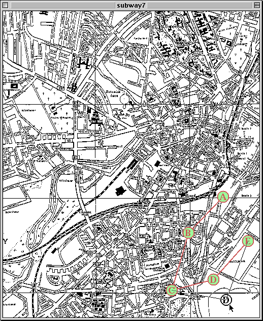
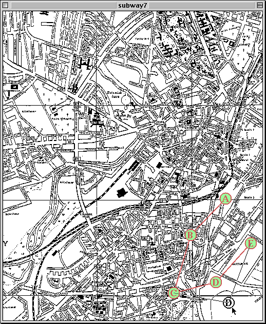

Bifrost Tutorial
In the main window, the Station marked 'D' has been clicked on with the mouse and the 'D' Station is being dragged. Notice how the Rails connecting it with other Stations stick to the Station D during the dragging.
In your Web-browser you may click on various parts of these snapshots; doing this will take you to the other parts of this manual, that describes how that particular "thing", you clicked, is created.
 

| Bifrost Tutorial | © Mjølner Informatics |